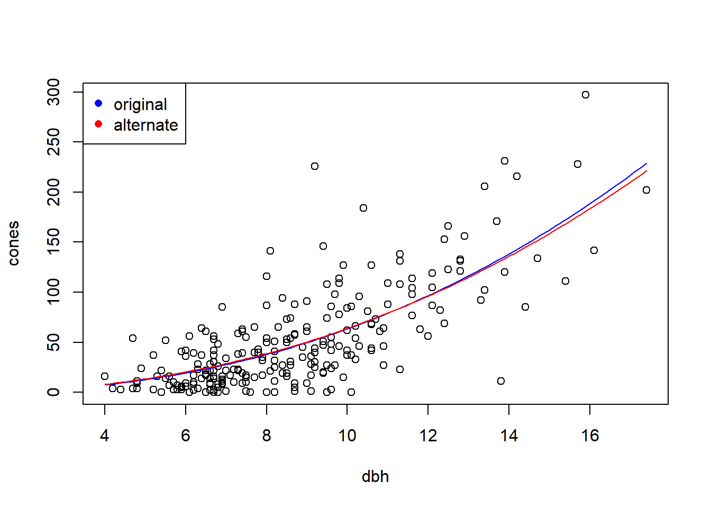
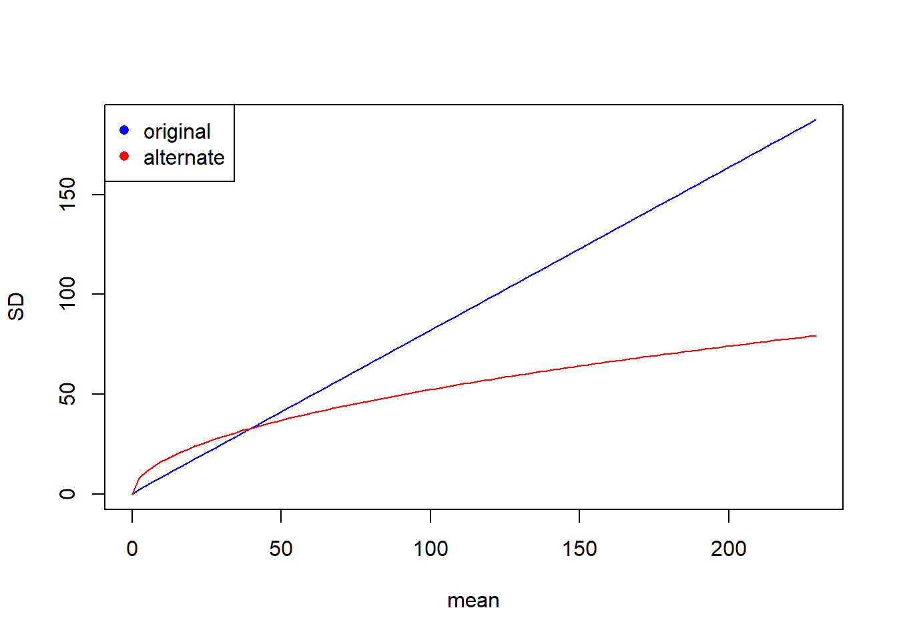

Chapter 2 Beyond the MLE: Confidence regions and hypothesis tests using the likelihood function
Likelihood can be used for more than simply isolating the MLE. The likelihood can also be used to generate confidence intervals for single parameters, or confidence regions for several parameters. We’ll start by using the horse-kick data to see how to generate a confidence interval for a single parameter, and then move on to considering models with more than one parameter.
2.1 Confidence intervals for single parameters
Likelihood regions for parameters can be found using upper contour sets of the log-likelihood function (or, equivalently, using lower contour sets of the negative log-likelihood function). An upper contour set consists of all values of the parameter(s) at which the log-likelihood is no less than a certain value. Even though this definition seems a bit wordy, the intuition is straightforward: if the log-likelihood measures the goodness of fit, then we just want to select the parameter values that correspond to a fit that is at least as good as a certain threshold.
We’ll start by constructing a confidence interval for \(\lambda\) with the horse-kick data.
horse <- read.table("data/horse.txt", header = TRUE)
horse.neg.ll <- function(my.lambda) {
ll.vals <- dpois(x = horse$deaths, lambda = my.lambda, log = TRUE)
-1 * sum(ll.vals)
}
# create a vector of lambda values using the 'seq'uence command
lambda.vals <- seq(from = 0.5, to = 1.0, by = 0.01)
# create an empty vector to store the values of the log-likelihood
ll.vals <- double(length = length(lambda.vals))
# use a loop to find the log-likelihood for each value in lambda.vals
for (i.lambda in 1:length(lambda.vals)) {
ll.vals[i.lambda] <- horse.neg.ll(lambda.vals[i.lambda])
}
plot(ll.vals ~ lambda.vals, xlab = "lambda", ylab = "negative log likelihood", type = "l")
To find an asymptotic confidence interval for \(\lambda\) with confidence level \(100 \times (1-\alpha)\%\), we want to find all the values of \(\lambda\) for which the negative log-likelihood is no greater than \(\frac{1}{2}\chi^2_1(1-\alpha)\) larger than the negative log-likelihood at the MLE.4 By \(\chi^2_1(1-\alpha)\), we mean \(1-\alpha\) quantile of a \(\chi^2_1\) distribution, which can be found with the function qchisq in R. The code below uses the function uniroot to find the upper and lower bounds of a 95% CI for \(\lambda\).
cutoff.ll <- horse.neg.ll(0.7) + qchisq(0.95, df = 1) / 2
# recreate the plot and add a line
plot(ll.vals ~ lambda.vals, xlab = "lambda", ylab = "negative log likelihood", type = "l")
abline(h = cutoff.ll, col = "red", lty = "dashed")
# use uniroot to find the confidence bounds precisely
my.function <- function(my.lambda){
horse.neg.ll(0.7) + qchisq(0.95, df = 1) / 2 - horse.neg.ll(my.lambda)
}
(lower <- uniroot(f = my.function, interval = c(0.6, 0.7)))## $root
## [1] 0.6065198
##
## $f.root
## [1] -3.556854e-05
##
## $iter
## [1] 4
##
## $init.it
## [1] NA
##
## $estim.prec
## [1] 6.103516e-05## $root
## [1] 0.8026265
##
## $f.root
## [1] -0.0001007316
##
## $iter
## [1] 6
##
## $init.it
## [1] NA
##
## $estim.prec
## [1] 6.103516e-05As an alternative programming style, we could have defined the objective function on the fly without bothering to create my.function.
(lower <- uniroot(f = function(x) horse.neg.ll(0.7) + qchisq(0.95, df = 1) / 2 - horse.neg.ll(x) ,
interval = c(0.6, 0.7)))## $root
## [1] 0.6065198
##
## $f.root
## [1] -3.556854e-05
##
## $iter
## [1] 4
##
## $init.it
## [1] NA
##
## $estim.prec
## [1] 6.103516e-05Let’s recreate the plot and add vertical lines to indicate the confidence interval.
plot(ll.vals ~ lambda.vals, xlab = "lambda", ylab = "negative log likelihood", type = "l")
abline(h = cutoff.ll, col = "red", lty = "dashed")
abline(v = c(lower$root, upper$root), col = "red")
Thus, the 95% CI for \(\lambda\) is \((0.607, 0.803)\).
There are two important caveats about the CIs constructed from the likelihood function in this way. First, the coverage is asymptotic, which means that the actual coverage is only guaranteed to match the nominal coverage (e.g., the 95% value) in the limit as the volume of data grows large. As Bolker (p. 194) notes, though, analysts use these asymptotic CIs “very freely”. Secondly, the CI is only valid if the MLE lies in the interior of its range of allowable values. Said the other way, the CI isn’t valid if the MLE lies at the edge of the parameter’s allowable values. We’ll have to worry about this most when constructing likelihood-based CIs for variances. To foreshadow, in mixed models we sometimes encounter a variance whose MLE is 0 — its smallest allowable value. In those case, we’ll have to modify the method detailed here to get a valid CI.
Here’s a bit of the theory behind the result above for generating asymptotic CIs from the likelihood function. This is only a sketch of the theory (as it doesn’t justify the key step); for a more complete explanation, Bolker (2008) suggests consulting Kendall and Stuart (1979).
Consider a model with \(k\) parameters, and write those parameters generically as \(\theta_1, \theta_2, \ldots, \theta_k\). Write the likelihood as \(\mathcal{L}(\theta_1,\ldots,\theta_k)\), and write the MLEs as \(\hat{\theta_1}\), etc., in the usual way. Now consider a subset of \(r \leq k\) of the parameters — and we might as well write these as the first \(r\) parameters, \(\theta_1, \ldots, \theta_r\) — and fix these at any particular value, and proceed to maximize the likelihood with respect to the remaining parameters. Write the values of the remaining parameters that maximize the likelihood as \(\tilde{\theta}_{r+1}, \ldots, \tilde{\theta}_k\). (It’s common to call these values the restricted MLEs, because they maximize the likelihood restricted to the values \(\theta_1, \ldots, \theta_r\), but in using this terminology we should not confuse these with REML estimates, which are yet to come and are a separate thing.) In other words, \[ \tilde{\theta}_{r+1}, \ldots, \tilde{\theta}_k = \mathop{\mathrm{arg\,max}}_{\theta_{r+1},\ldots,\theta_{k}} \mathcal{L}(\theta_1, \ldots, \theta_r, \theta_{r+1},\ldots, \theta_k). \] Now (and this is the key step that we’ll just assert here) it can be shown that, asymptotically (e.g., in the limit as \(n\) becomes large) \[ 2 \ln \dfrac{\mathcal{L}(\hat{\theta}_1,\ldots,\hat{\theta}_k)}{\mathcal{L}(\theta_1, \ldots, \theta_r, \tilde{\theta}_{r+1},\ldots, \tilde{\theta}_k)} \sim \chi^2_r. \] From here, it’s simple algebra to re-express the above in terms of the negative log likelihood to yield \[ 2 \times \left[-\ell(\theta_1, \ldots, \theta_r, \tilde{\theta}_{r+1},\ldots, \tilde{\theta}_k) - (-\ell(\hat{\theta}_1,\ldots,\hat{\theta}_k)) \right] \sim \chi^2_r \] from which the needed result follows.
2.2 Confidence regions, profile likelihoods, and associated univariate intervals
With a 2-parameter model, we can plot a confidence region directly. First some housekeeping to get started:
library(emdbook)
data("ReedfrogFuncresp")
# rename something shorter
frog <- ReedfrogFuncresp
rm(ReedfrogFuncresp)
frog.neg.ll <- function(params){
a <- params[1]
h <- params[2]
prob.vals <- a / (1 + a * h * frog$Initial)
ll.vals <- dbinom(frog$Killed, size = frog$Initial, prob = prob.vals, log = TRUE)
-1 * sum(ll.vals)
}
(frog.mle <- optim(par = c(0.5, 1/60),
fn = frog.neg.ll))## Warning in dbinom(frog$Killed, size = frog$Initial, prob = prob.vals, log =
## TRUE): NaNs produced## $par
## [1] 0.52585566 0.01660104
##
## $value
## [1] 46.72136
##
## $counts
## function gradient
## 61 NA
##
## $convergence
## [1] 0
##
## $message
## NULLa.mle <- frog.mle$par[1]
h.mle <- frog.mle$par[2]
# plot negative likelihood contours
a.vals <- seq(from = 0.3, to = 0.75, by = 0.01)
h.vals <- seq(from = 0.001, to = 0.03, by = 0.001)
ll.vals <- matrix(nrow = length(a.vals), ncol = length(h.vals))
for (i.a in 1:length(a.vals)) {
for(i.h in 1:length(h.vals)) {
ll.vals[i.a, i.h] <- frog.neg.ll(c(a.vals[i.a], h.vals[i.h]))
}
}
contour(x = a.vals, y = h.vals, z = ll.vals, nlevels = 100,
xlab = "a", ylab = "h")
points(x = a.mle, y = h.mle, col = "red")
Equipped with the contour plot, graphing the appropriate confidence region is straightforward.
cut.off <- frog.neg.ll(c(a.mle, h.mle)) + (1 / 2) * qchisq(.95, df = 2)
# recreate the plot and add a line for the 95% confidence region
contour(x = a.vals, y = h.vals, z = ll.vals, nlevels = 100,
xlab = "a", ylab = "h")
points(x = a.mle, y = h.mle, col = "red")
contour(x = a.vals, y = h.vals, z = ll.vals,
levels = cut.off,
add = TRUE, col = "red", lwd = 2)
2.2.1 Profile likelihoods
There are several drawbacks to confidence regions. First, while a two-dimensional confidence region can be readily visualized, it is hard to summarize or describe. Second, and more importantly, most models have more than two parameters. In these models, a confidence region would have more than 2 dimensions, and thus would be impractical to visualize. Thus it is helpful, or even essential, to be able to generate univariate confidence intervals for single parameters from high-dimensional likelihoods.
The recommended approach for generating univariate confidence intervals from a high-dimensional likelihood surface is to use a technique called profiling. A profile likelihood for one or more parameters is found by optimizing the likelihood when the parameter(s) of interest is fixed, and all other parameters are allowed to vary. To be a bit more precise, suppose we have a model a parameter(s) of interest \(\theta\) and nuisance parameter(s) \(\phi\). (Here, we’ll let both \(\theta\) and \(\phi\) denote either single parameters or vectors of several parameters, as the situation requires. Doing this allows us to cut down on the notation.) Write the likelihood function as \(\mathcal{L}\!\left(\theta, \phi\right)\). The profile likelihood for \(\theta\), which we might write as \(\mathcal{L}_{\theta}(\theta)\), is \[\begin{equation} \mathcal{L}_{\theta}(\theta) = \max_{\phi} \, \mathcal{L}\!\left(\theta, \phi\right). \end{equation}\] If we’re working with the negative log-likelihood instead of the likelihood, we’d replace the maximization above with a minimization. We can find a confidence region for \(\theta\) using the upper contour sets of the profile likelihood, in just the same way as we did with the full likelihood.
We will illustrate this approach by computing a profile-based confidence interval for the attack rate \(a\) in the tadpole data.
# profile log-likelihood function for the attack rate a
profile.ll <- function(my.a) {
# Calculate the minimum log likelihood value for a given value of a, the attack rate
my.ll <- function(h) frog.neg.ll(c(my.a, h))
my.profile <- optimize(f = my.ll, interval = c(0, 0.03), maximum = FALSE)
my.profile$objective
}
# plot the profile likelihood vs. a
# not necessary for finding the CI, but useful for understanding
a.values <- seq(from = 0.3, to = 0.8, by = 0.01)
a.profile <- double(length = length(a.values))
for (i in 1:length(a.values)) {
a.profile[i] <- profile.ll(a.values[i])
}
plot(x = a.values, y = a.profile, xlab = "a", ylab = "negative log-likelihood", type = "l")
Now we’ll follow the same steps as before to compute the profile-based 95% CI.
# Now follow the same steps as before to find the profile 95% CI
cut.off <- profile.ll(a.mle) + qchisq(0.95, df = 1) / 2
(lower <- uniroot(f = function(x) cut.off - profile.ll(x) ,
interval = c(0.3, a.mle)))## $root
## [1] 0.4024268
##
## $f.root
## [1] -0.0001303772
##
## $iter
## [1] 6
##
## $init.it
## [1] NA
##
## $estim.prec
## [1] 6.103516e-05## $root
## [1] 0.6824678
##
## $f.root
## [1] -9.763258e-06
##
## $iter
## [1] 6
##
## $init.it
## [1] NA
##
## $estim.prec
## [1] 6.103516e-05plot(x = a.values, y = a.profile, xlab = "a", ylab = "negative log-likelihood", type = "l")
abline(v = c(lower$root, upper$root), col = "blue")
abline(h = cut.off, col = "blue", lty = "dashed")
So, the 95% profile CI for \(a\) is (0.402, 0.682).
2.3 Quadratic approximations to confidence intervals and regions
Likelihood profiling provides a straightforward way to summarize a high-dimensional confidence region by univariate confidence intervals. However, these profile intervals can still involve quite a bit of computation. Further, they are not able to capture possible correlations among parameter estimates, which are revealed in (two-dimensional) confidence regions. (Recall the shape of the joint confidence region for the parameters \(a\) and \(h\) in the tadpole data.) Locally quadratic approximations provide a way to approximate the (already approximate) univariate confidence intervals and bivariate confidence regions using only information about the curvature of the likelihood surface at the MLE.
There’s some remarkable theory behind the idea of approximating a log-likelihood with a quadratic function. Asymptotically, (that is, as the number of data points grows large), the sampling distribution of an MLE approaches a Gaussian distribution (with the usual caveat that the MLE can’t be on the edge of the allowable parameter space). But the log-likelihood of the parameters in a Gaussian distribution is exactly quadratic. Therefore, as the number of data points grows large, the log-likelihood function of any model will come to resemble a quadratic function in the neighborhood of the MLE.
We’ll first start by revisiting the horse-kick data again. Of course, with the more precise \(\chi^2\) based confidence interval in hand, there is no reason to seek an approximation. But doing so allows us to illustrate the calculations involved, and to see how well the approximation fares in this case.
First some housekeeping to read the data into memory, etc.
# clean up
rm(list = ls())
# read in the data
horse <- read.table("data/horse.txt", header = TRUE)
horse.neg.ll <- function(my.lambda) {
ll.vals <- dpois(x = horse$deaths, lambda = my.lambda, log = TRUE)
-1 * sum(ll.vals)
}
# use uniroot to find the confidence bounds precisely
my.function <- function(my.lambda){
horse.neg.ll(0.7) + qchisq(0.95, df = 1) / 2 - horse.neg.ll(my.lambda)
}
lower <- uniroot(f = my.function, interval = c(0.6, 0.7))
upper <- uniroot(f = my.function, interval = c(0.7, 0.9))To proceed with the approximation, we need to calculate the second derivative of the log-likelihood at the MLE. We’ll rely on the hessian routine in the numDeriv package to calculate this second derivative for us. However, it’s worth noting that we can approximate the second derivative numerically by the method of finite differences. This method only requires to additional evaluations of the likelihood function!
## this function finds the second derivative at the MLE by finite differences
second.deriv <- function(delta.l) {
(horse.neg.ll(0.7 + delta.l) - 2 * horse.neg.ll(0.7) + horse.neg.ll(0.7 - delta.l)) / delta.l ^ 2
}
(horse.D2 <- second.deriv(1e-04))## [1] 400## [1] 400.0003Let’s compare this answer to the answer obtained by numDeriv::hessian.
## [,1]
## [1,] 400The approximate standard error of \(\hat{\lambda}\) is the square root of the inverse of the second derivative of the likelihood function.
## [1] 0.05Now we can approximate the 95% confidence interval by using critical values from a standard normal distribution.
## [1] 0.6020018## [1] 0.7979982Compare the approximation to the “exact” values
## [1] 0.6065198## [1] 0.8026265Make a plot
# create a vector of lambda values using the 'seq'uence command
lambda.vals <- seq(from = 0.5, to = 1.0, by = 0.01)
# create an empty vector to store the values of the log-likelihood
ll.vals <- double(length = length(lambda.vals))
# use a loop to find the log-likelihood for each value in lambda.vals
for (i.lambda in 1:length(lambda.vals)) {
ll.vals[i.lambda] <- horse.neg.ll(lambda.vals[i.lambda])
}
plot(ll.vals ~ lambda.vals, xlab = "lambda", ylab = "negative log likelihood", type = "l", col = "red")
approx.ll <- function(lambda) horse.neg.ll(0.7) + (1/2) * (lambda - 0.7)^2 * horse.D2
curve(approx.ll, from = min(lambda.vals), to = max(lambda.vals), add = TRUE, col = "blue")
###################################
## Now find the confidence interval, and plot it
####################################
cutoff.ll <- horse.neg.ll(0.7) + qchisq(0.95, df = 1) / 2
# add a line to the plot
abline(h = cutoff.ll, col = "red", lty = "dashed")
abline(v = c(lower$root, upper$root), col = "red")
abline(v = c(lower.approx, upper.approx), col = "blue")
legend(x = 0.65, y = 326,
leg = c("exact", "approximate"),
pch = 16,
col = c("red", "blue"),
bty = "n")
Notice that the full \(\chi^2\)-based confidence intervals capture the asymmetry in the information about \(\lambda\). The intervals based on the quadratic approximation are symmetric.
Now, use the quadratic approximation to find standard errors for \(\hat{a}\) and \(\hat{h}\) in the tadpole predation data.
The first part is preparatory work from old classes.
library(emdbook)
data("ReedfrogFuncresp")
# rename something shorter
frog <- ReedfrogFuncresp
rm(ReedfrogFuncresp)
frog.neg.ll <- function(params){
a <- params[1]
h <- params[2]
prob.vals <- a / (1 + a * h * frog$Initial)
ll.vals <- dbinom(frog$Killed, size = frog$Initial, prob = prob.vals, log = TRUE)
-1 * sum(ll.vals)
}
frog.mle <- optim(par = c(0.5, 1/60),
fn = frog.neg.ll)## Warning in dbinom(frog$Killed, size = frog$Initial, prob = prob.vals, log =
## TRUE): NaNs produced## [1] 0.5258557## [1] 0.01660104Now find the hessian:
## [,1] [,2]
## [1,] 616.5606 -7394.263
## [2,] -7394.2628 130640.685The matrix inverse of the hessian is the variance-covariance matrix of the parameters. Note that R uses the function solve to find the inverse of a matrix.
## [,1] [,2]
## [1,] 0.0050493492 2.857932e-04
## [2,] 0.0002857932 2.383048e-05We can use the handy cov2cor function to convert the variance matrix into a correlation matrix:
## [,1] [,2]
## [1,] 1.0000000 0.8238872
## [2,] 0.8238872 1.0000000Note the large correlation between \(\hat{a}\) and \(\hat{h}\). Compare with Figure 6.13 of Bolker.
The standard errors of \(\hat{a}\) and \(\hat{h}\) are the square roots of the diagaonal elements of the variance-covariance matrix.
## [1] 0.07105877## [1] 0.004881647Note the large correlation between \(\hat{a}\) and \(\hat{h}\).
Let’s use the (approximate) standard error of \(\hat{a}\) to calculate an (approximate) 95% confidence interval:
## [1] 0.3865830 0.6651283Recall that the 95% confidence interval we calculated by the profile likelihood was \((0.402, 0.682)\). So the quadratic approximation has gotten the width of the interval more or less correct, but it has fared less at capturing the asymmetry of the interval.
2.4 Comparing models: Likelihood ratio test and AIC
Obtaining a parsimonious statistical description of data often requires arbitrating between competing model fits. Likelihood provides two tools for comparing models: likelihood ratio tests (LRTs) and information criteria. Of the latter, the best known information criterion is due to Akaike, and takes the name AIC. (Akaike didn’t name AIC after himself; he used AIC to refer to “An information criterion”. In his honor, the acronym is now largely taken to stand for “Akaike’s information criterion”.)
LRTs and information criteria have complementary strengths and weaknesses. LRTs are direct, head-to-head comparisons of nested models. By “nested”, we mean that one model can be obtained as a special case of the other. The “reduced”, or less flexible (and thus more parsimonious) model plays the role of the null hypothesis, and the “full”, or more flexible (and thus less parsimonious) model plays the role of the alternative hypothesis. The LRT then formally evaluates whether the improvement in fit offered by the full model is statistically significant, that is, greater than what we would expect merely by chance.
On the other hand, information criteria provide a penalized goodness-of-fit measure that can be used to compare many models at once. Information criteria produce a ranking of model fits, and thus a best-fitting model. The downside to information criteria is that there are no hard and fast guidelines to determine when one model provides a significantly better fit than another. The properties of information criteria are also less well understood than the properties of LRTs.
To illustrate both, we will use the study of cone production by fir trees studied in \(\S\) 6.6 of Bolker. These data are originally from work by Dodd and Silvertown. The data are much richer than we will examine here. Like Bolker, we will focus on whether the relationship between tree size (as measured by diameter at breast height, or dbh) and the number of cones produces differs between populations that “have experienced wave-like die-offs” and those that have not.
First some preparatory work to import and assemble the data:
require(emdbook)
data("FirDBHFec")
# give the data a simpler name
fir <- FirDBHFec
rm(FirDBHFec)
fir <- fir[, c("WAVE_NON", "DBH", "TOTCONES")] # select just the variables we want
summary(fir)## WAVE_NON DBH TOTCONES
## n:166 Min. : 3.200 Min. : 0.0
## w:205 1st Qu.: 6.400 1st Qu.: 14.0
## Median : 7.600 Median : 36.0
## Mean : 8.169 Mean : 49.9
## 3rd Qu.: 9.700 3rd Qu.: 66.0
## Max. :17.400 Max. :297.0
## NA's :26 NA's :114names(fir) <- c("wave", "dbh", "cones") # rename the variables
# get rid of the incomplete records
fir <- na.omit(fir)
par(mfrow = c(1, 2))
plot(cones ~ dbh, data = fir, type = "n", main = "wave")
points(cones ~ dbh, data = subset(fir, wave == "w"))
plot(cones ~ dbh, data = fir, type = "n", main = "non-wave")
points(cones ~ dbh, data = subset(fir, wave == "n"))
# any non-integral responses?
with(fir, table(cones == round(cones))) # illustrate the use of 'with'##
## FALSE TRUE
## 6 236# round the non-integral values
fir$cones <- round(fir$cones)
# check
with(fir, table(cones == round(cones)))##
## TRUE
## 242Like Bolker, we will assume that the average number of cones produced (\(\mu\)) has a power-law relationship with tree dbh (\(x\)). We will also assume that the actual number of cones produced (\(Y\)) takes a negative binomial distribution with size-dependent mean and overdispersion parameter \(k\). That is, our model is \[\begin{align*} \mu(x) & = a x ^ b \\ Y & \sim \mbox{NB}(\mu(x), k) \end{align*}\]
To head in a slightly different direction from Bolker, we will compare two models. In the first, or reduced, model the same parameters will prevail for both wave and non-wave populations. Thus this model has three parameters: \(a\), \(b\), and \(k\). In the second, or full, model, we will allow the \(a\) and \(b\) parameters to differ between the wave and non-wave populations. (We will continue to assume a common \(k\) for both population types.) Using subscripts on \(a\) and \(b\) to distinguish population types, the full model then has 5 parameters: \(a_w\), \(a_n\), \(b_w\), \(b_n\), and \(k\). We’ll fit the reduced model first. To do so, we’ll use the dnbinom function in R, in which the \(k\) parameter is located in the formal argument “size”.
fir.neg.ll <- function(parms, x, y){
a <- parms[1]
b <- parms[2]
k <- parms[3]
my.mu <- a * x^b
ll.values <- dnbinom(y, size = k, mu = my.mu, log = TRUE)
neg.ll <- -1 * sum(ll.values)
return(neg.ll)
}Note a subtle difference here. In preparation for fitting this same model to different subsets of the data, the function fir.neg.ll has formal arguments that receive the values of the \(x\) and \(y\) variables. In the call to optim, we can supply those additional values as subsequent arguments in the optim function, as illustrated below.
# fit reduced model
(fir.reduced <- optim(f = fir.neg.ll,
par = c(a = 1, b = 1, k = 1),
x = fir$dbh,
y = fir$cones))## $par
## a b k
## 0.3041425 2.3190142 1.5033525
##
## $value
## [1] 1136.015
##
## $counts
## function gradient
## 134 NA
##
## $convergence
## [1] 0
##
## $message
## NULLMake a plot of the reduced model fit, with both populations pooled together:
dbh.vals <- seq(from = min(fir$dbh), to = max(fir$dbh), length = 100)
fit.vals <- double(length = length(dbh.vals))
for (i in seq(along = dbh.vals)) {
fit.vals[i] <- a.mle * dbh.vals[i] ^ b.mle
}
par(mfrow = c(1, 1)) # don't break the next figure into two panels
with(fir, plot(cones ~ dbh)) # plot the data points
lines(fit.vals ~ dbh.vals, col = "blue") 
Now fit the full model with separate values of \(a\) and \(b\) for each population:
fir.neg.ll.full <- function(parms) {
a.w <- parms[1]
b.w <- parms[2]
a.n <- parms[3]
b.n <- parms[4]
k <- parms[5]
wave <- subset(fir, wave == "w")
nonwave <- subset(fir, wave == "n")
# note how we call fir.neg.ll here, but each time only
# passing a subset of the data
neg.ll.wave <- fir.neg.ll(parms = c(a = a.w, b = b.w, k = k),
x = wave$dbh,
y = wave$cones)
neg.ll.nonwave <- fir.neg.ll(parms = c(a = a.n, b = b.n, k = k),
x = nonwave$dbh,
y = nonwave$cones)
total.ll <- neg.ll.wave + neg.ll.nonwave
return(total.ll)
}
(fir.full <- optim(f = fir.neg.ll.full,
par = c(a.w = 1, b.w = 1, a.n = 1, b.n = 1, k = 1)))## $par
## a.w b.w a.n b.n k
## 0.4136414 2.1417941 0.2874122 2.3550753 1.5083974
##
## $value
## [1] 1135.677
##
## $counts
## function gradient
## 502 NA
##
## $convergence
## [1] 1
##
## $message
## NULLLet’s make a plot to show the different fits.
a.w.mle <- fir.full$par[1]
b.w.mle <- fir.full$par[2]
a.n.mle <- fir.full$par[3]
b.n.mle <- fir.full$par[4]
par(mfrow = c(1, 2))
# wave populations
fit.vals.wave <- fit.vals.non <- double(length = length(dbh.vals))
plot(cones ~ dbh, data = fir, type = "n", main = "wave")
points(cones ~ dbh, data = subset(fir, wave == "w"))
for (i in seq(along = dbh.vals)) {
fit.vals.wave[i] <- a.w.mle * dbh.vals[i] ^ b.w.mle
}
lines(fit.vals.wave ~ dbh.vals, col = "blue")
# non-wave populations
plot(cones ~ dbh, data = fir, type = "n", main = "non-wave")
points(cones ~ dbh, data = subset(fir, wave == "n"))
for (i in seq(along = dbh.vals)) {
fit.vals.non[i] <- a.n.mle * dbh.vals[i] ^ b.n.mle
}
lines(fit.vals.non ~ dbh.vals, col = "red") 
Note that to compute the negative log likelihood for the full model, we compute the negative log likelihood for each population separately, and then sum the two negative log likelihoods. We can see the justification for doing so by writing out the log likelihood function explicitly: \[\begin{eqnarray*} \ln L(a_w, a_n, b_w, b_n, k; \mathbf{y}) & = & \ln \prod_{i \in \left\{w, n \right\}} \prod_{j=1}^{n_i} f(y_{ij}; a_w, a_n, b_w, b_n, k) \\ & = & \sum_{i \in \left\{w, n \right\}} \sum_{j=1}^{n_i} \ln f(y_{ij}; a_w, a_n, b_w, b_n, k) \\ & = & \sum_{j=1}^{n_w} \ln f(y_{w,j}; a_w, b_w, k) + \sum_{j=1}^{n_n} \ln f(y_{2, n}; a_n, b_n, k) \end{eqnarray*}\]
Now conduct the likelihood ratio test:
(lrt.stat <- 2 * (fir.reduced$value - fir.full$value)) # compute the likelihood ratio test statistic## [1] 0.6762567## [1] 0.7131037The LRT suggests that the full model does not provide a significantly better fit than the reduced model (\(\chi^2_2 = 0.676\), \(p=0.71\)). In other words, there is no evidence that the two population types have different relationships between tree size and avearage fecundity.
Now compare AIC values for the two models. Because we have already done the LRT, this AIC comparison is for illustration.
## [1] 2278.03## [1] 2281.354## [1] 3.323743The reduced model is AIC-best, although the \(\Delta AIC\) is only moderately large.
We can also fit a Poisson model to these data. Because we have ruled out the need for different models for the two population type, we fit a Poisson model to the data with the two populations pooled together.
fir.neg.ll.pois <- function(parms, x, y){
a <- parms[1]
b <- parms[2]
my.mu <- a * x^b
ll.values <- dpois(y, lambda = my.mu, log = TRUE)
-1 * sum(ll.values)
}
(fir.pois <- optim(f = fir.neg.ll.pois,
par = c(a = 1, b = 1),
x = fir$dbh,
y = fir$cones))## $par
## a b
## 0.2613297 2.3883860
##
## $value
## [1] 3161.832
##
## $counts
## function gradient
## 115 NA
##
## $convergence
## [1] 0
##
## $message
## NULLCalculate the AIC for this model:
## [1] 6327.664Whoa! The AIC suggests the negative binomial model is an overwhelmingly better fit.
Finally, make a plot to compare the two fits:
with(fir, plot(cones ~ dbh))
lines(fit.vals ~ dbh.vals, col = "blue") # plot the fit from the NegBin model
## calculate and plot the fit for the Poisson model
fit.vals.pois <- double(length = length(dbh.vals))
for (i in seq(along = dbh.vals)) {
fit.vals.pois[i] <- a.mle.pois * dbh.vals[i] ^ b.mle.pois
}
lines(fit.vals.pois ~ dbh.vals, col = "red")
legend(x = 4, y = 280,
leg = c("Neg Bin", "Poisson"),
col = c("blue", "red"),
pch = 16,
bty = "n")
2.5 The negative binomial distriution, revisited
The negative binomial distribution is a funny distribution that is frequently misunderstood by ecologists. In ecology, the negative binomial distribution is typically parameterized by the distribution’s mean (which we typically write as \(\mu\)) and the “overdispersion parameter”, almost always written as \(k\). In this parameterization, if \(X\) has a negative binomial distribution with mean \(\mu\) and overdispersion parameter \(k\), then the variance of \(X\) is \[ Var(X) = \mu + \frac{\mu^2}{k} \] Thus, for fixed \(\mu\), the variance increases as \(k\) decreases. As \(k\) gets large, the variance approaches \(\mu\), and the negative binomial distribution approaches a Poisson distribution.
There are a few occasions in ecology where the overdispersion parameter \(k\) has a mechanistic interpretation. In all other cases, though, \(k\) is merely a phenomenological descriptor that captures the relationship between the mean and variance for one particular value of \(\mu\). The error that most ecologists make is to assume that a single value of \(k\) should prevail across several values of \(\mu\). If \(k\) is phenomenological, there is no reason that \(k\) should remain fixed as \(\mu\) changes. The fit to the fir data exemplifies this error, as so far we have assumed that one value of \(k\) must prevail across all sizes of trees. By assuming that \(k\) is fixed, we impose a relationship on the data where the variance must increase quadratically as the mean increases. This may be a reasonable model for the relationship between the variance and the mean, or it may not be.
Instead of assuming \(k\) constant, another equally viable approach might be to assume that \(k\) is a linear function of \(\mu\). In other words, We might set \(k = \kappa \mu\) for some value of \(\kappa\). In this case, for a given mean \(\mu\), the variance would be \(\mu + \frac{\mu^2}{\kappa \mu} = \mu \left(1 + \frac{1}{\kappa}\right)\), so that the variance would increase linearly as the mean increases. We can try fitting this alternative model to the fir tree data, again pooling wave and non-wave populations together.
fir.alt.neg.ll <- function(parms, x, y){
a <- exp(parms[1])
b <- parms[2]
k <- exp(parms[3])
my.mu <- a * x^b
ll.values <- dnbinom(y, size = k * my.mu, mu = my.mu, log = TRUE)
-1 * sum(ll.values)
}
(fir.alt <- optim(f = fir.alt.neg.ll,
par = c(a = 0, b = 1, k = 0),
x = fir$dbh,
y = fir$cones))## $par
## a b k
## -1.008373 2.243545 -3.278311
##
## $value
## [1] 1128.403
##
## $counts
## function gradient
## 182 NA
##
## $convergence
## [1] 0
##
## $message
## NULL## a
## 0.3648121## b
## 2.243545## k
## 0.03769186If we compare the fits graphically, the alternative model doesn’t generate a dramatically different fit for the relationship between the average cone production and tree size:
fit.vals.alt <- double(length = length(dbh.vals))
for (i in seq(along = dbh.vals)) {
fit.vals.alt[i] <- a.mle.alt * dbh.vals[i] ^ b.mle.alt
}
with(fir, plot(cones ~ dbh))
lines(fit.vals ~ dbh.vals, col = "blue")
lines(fit.vals.alt ~ dbh.vals, col = "red")
legend("topleft", col = c("blue", "red"), pch = 16, leg = c("original", "alternate"))
However, the two models imply very different relationships between the variance in cone production and tree size. Let’s look at the implied relationship between the standard deviation of cone production and tree size:
mu.vals <- seq(from = 0, to = max(fit.vals), length = 100)
sd.vals.nb1 <- sqrt(mu.vals + mu.vals ^ 2 / k.mle)
sd.vals.nb2 <- sqrt(mu.vals * (1 + 1 / k.mle.alt))
plot(mu.vals, sd.vals.nb1, xlab = "mean", ylab = "SD", type = "l", col = "blue")
lines(mu.vals, sd.vals.nb2, col = "red")
legend("topleft", col = c("blue", "red"), pch = 16, leg = c("original", "alternate"))
We can calculate the AIC for this alternate parameterization as well:
## [1] 2262.805Recall that the AIC value for the original fit was 2278.0. Thus the model with the alternative parameterization is considerably better by AIC.
Bibliography
See section 6.4.1.1 of Bolker to see how this follows from a result about the likelihood ratio.↩︎